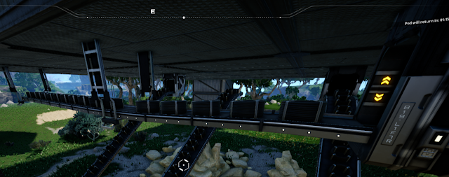

Awesome mod, thanks.
I was wondering if you could add the option to rotate them, just like the regular lifts ?
In the setup i want to them on, the entry and exit must face the same way.
Thanks !

Awesome mod, thanks.
I was wondering if you could add the option to rotate them, just like the regular lifts ?
In the setup i want to them on, the entry and exit must face the same way.
Thanks !
Hi Olivier, that’s the best way, i will try some things to make it like this.
I started doing it in a very limited way, its a fixed splitter with 1 in and 1 out…
But… I think, maybe, we can get to go to the two ways… like left and right… but we only have to solve the graphic.
Other way will be an lift without foundation collision, maybe this will be the fix for it…
I will keep working on it! Thanks for the suggestion!
Dakota… I think i managed to do a pole for the ceiling! X)
I will launch on this new version of the mod (0.0.4)

What do you think?
Man, the extendable walkway mod is like an alpha at best, maybe let him finish one thing before you urge him on to a new one!
Yes… that i started doing like a road, but never worked the way i like… But all my mods are in alpha! Only made for those who really want to see something very experimental in the game.
@Andre_Aquila what about a multi-input//multi-output balancer?
EG a building that has say 5 inputs and 5 outputs, this would allow for much more flexibility and make a main bus system easier to work with. Much in the same way a large storage container is a 2x2 input/output, the large storage can balances;
1>1
1>2
2>1
2>2
I’d expect this building to be able to do
1>1
1>2
1>3
1>4
1>5
2>1
2>2
2>3
2>4
2>5
3>1
3>2
etc…
5>4
5>5
Is something like that possible?
The thing is, I’d really like to use several of your mods, but I am not willing to risk corrupting my save by adding multiple alpha-quality mods - I’ve already lost days worth of building to a similar issue with a different mod. Lots of your ideas are excellent, I just wish they were less buggy, because I want to use them, but it’s not worth risking 200+ hours worth of work to do it.
For the covered conveyor mod/ conveyor mod, I would love to have a covered conveyor mk6.
Same except I just backed up my save and assessed if it was worth it. In my save it was’t too bad and I thought the mods were worth it so I made the change.
Hi Ryan,
I think its possible, dont know if I can do it…
i will try it, and return to you! Great Idea! Thanks
@ Doldol00_D.A.B - Yeah, I did that myself, problem was that the mod in question didn’t crash the game, but somehow corrupted all saves made after it was installed. So I spent two days (just leaving the game running overnight) building, then when I finally restarted and tried to load any of the saves made within those two days, the game immediately crashes to desktop.
I turn some of the outputs from the multi splitter to a Multi Balancer, 6 ins to 6 outs… I think it worked nicely… Im laucheing now in this new version 0.0.2! Let me know what you think… Thanks Ryan
Sounds good I’ll give it a try tomorrow. A vertical one would be good too that lines up with stacked poles, eg I have 4 stack of iron belts, I’d like to balance them 4x4, that way you can split 1 belt and draw from all 4 inputs evenly, in the same way you do from a bus in factorio.
Vertical!!! Noted! Balancer 4x4 to fit 4 Stacked Belts … Nice… i will try it!
in covered conveyors add a covered conveyor LIFT!
Nice… In the next version i will include the lifts! Thanks!
Hey,
Tested the balancer - it works great!  it seems to always choose the same belt if demand is super low, but in those instances it’s not a problem. Looking forward to the vertical version!
it seems to always choose the same belt if demand is super low, but in those instances it’s not a problem. Looking forward to the vertical version!
My setup is current 4 stacks, but if you can do a 6x6 like you have for the horizontal that would be perfect!
If I may, one thing I feel it is missing is the possibility to stack the Ceiling Conveyor Pole and also rotate the Conveyor Hole.
Keel up the good work! I love this mod I suggest it to mod gamers
My apologies, I didn’t see your reply, I need to check to see if I can get emails for replies.
It looks great, I just saw the update 0.0.7 I am loading up my game to try it out now.
MANY thanks again!
P.S. After testing:
It works wonderfully, and just as expected/on the ground.
Planning to try out the multi-splitter/mergers later. They should rename this game “Rabbit Holes”, each day I get lost chasing down something trivial.
Hi Andre_Aquila. Thanks for your work. Is it possible to add Cyrillic characters to the mod 3D Text? Б Г Д Ё Ж З И Й Л П У Ф Ц Ч Ш Щ Ъ Ы Ь Э Ю Я